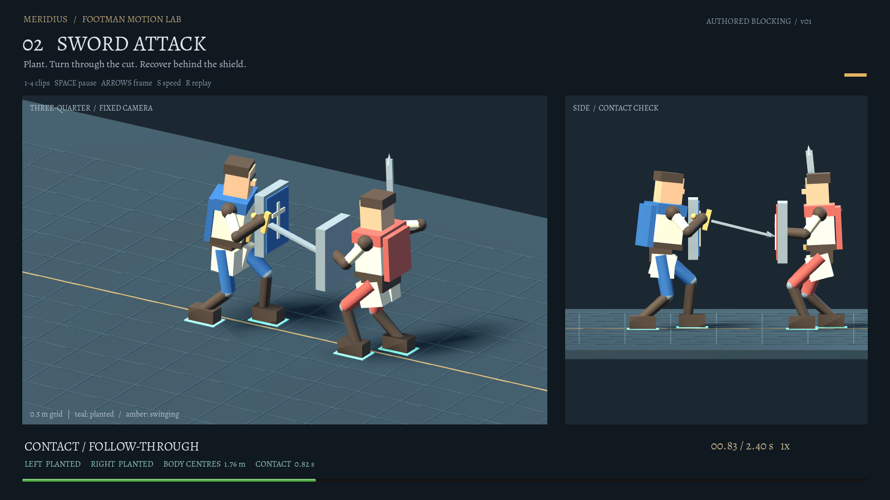
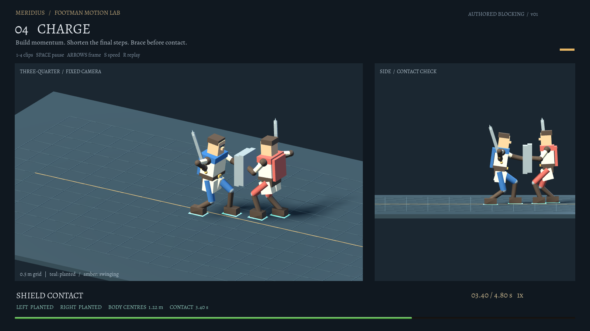

MERIDIUS / AMBERFELD FOOTMEN / MOTION STUDY 01 / 23 OCT 2026
Move. Cut. Bash. Charge.
Four original motion studies, built around planted feet, readable weight transfer and contact at the weapon or shield. Simple articulated footmen keep the movement easy to judge before your reference pass.
01 / Move
5.60 s · eight steps · 3.00 m of travel · start, walk, settle
SupportThe stance foot stays in world space while the pelvis travels over it.
TransferThe other knee bends and the boot clears the ground. The shield remains quiet.
HaltShort final placements receive the body. The root settles without a spring overshoot.
02 / Sword attack
2.40 s · lead foot planted at 0.65 s · sword contact at 0.82 s
LoadA small lead step and rearward shoulder turn create preparation without a long slide.
CutThe feet plant before the descending cut. The sword reaches the defender's shield.
RecoverThe hand retracts on the weapon side, then the lead foot steps back into guard.
03 / Shield bash
2.50 s · lead foot planted at 0.69 s · shield contact at 0.86 s
LoadThe hips compress over the rear leg and the elbow folds. The sword stays guarded.
DriveThe shield travels ahead of the chest. Its front plane meets the opposing shield.
AbsorbThe defender yields after contact. A rear-foot catch-up supports the new forward guard.
04 / Charge
4.80 s · running and braking steps · root stops at 3.30 s · contact at 3.40 s
CommitLower hips, forward lean and a short flight phase distinguish the run from walking.
BrakeThe last placements restore double support. The body stops advancing before the shield lands.
BraceShield extension supplies the final reach. The attacker holds ground while the defender takes a recovery step.
Why the current footmen feel floaty
The source inspection identifies specific presentation mechanisms consistent with your observation. The accompanying captures show the existing game, not the new study rig.
| Current implementation | Consequence to address | Motion contract demonstrated here |
|---|---|---|
| Attack selects two sprite poses, then offsets the entire figure. | The boots translate with the lunge; no planted attack foot stays behind. | Plant the lead foot, move the hips between supports, animate the weapon independently. |
| Front and rear ranks receive fixed lunge distances: 22 / 13 × figure scale. | The lunge does not measure the opposing soldier's body or shield gap. Dense ranks can overlap. | Finish at a reachable contact surface with a separate body clearance. |
| Forward-facing walk poses use a clock-driven cycle; the back-view foot rig caps its reach. | Foot speed can disagree with world travel. A clamped stride cannot cancel a faster root. | Plan the foot placements and root travel together; match the production gait to actual distance. |
| Members follow an underdamped spring, including after arrival. | The body can skid beyond a halt and settle backward. | Land the stopping steps before settling the body; use secondary motion above the supports. |
Current-game baseline — movement and melee
Existing movement
Existing melee, front-facing
For a later game pass, give each front-rank attacker a reachable target lane, stop the body before overlap, and let rear ranks hold or step into a free lane. Bind damage and sound to the approved contact time. Those production changes are still pending; this single-pair study does not validate crowd spacing.
Evidence and editable source
The checks cover foot anchors and ground clearance, limb reach, supported contact, body spacing, the stopped charge root, and the difference between walking support and running flight. These are mathematical checks of the study rig, not a full collision test or proof of natural motion.


Final quick regression suite: 368 passed, 1 failed, 10 skipped (172.9 s). The unrelated test_audio::test_a_marching_squad_is_one_tread reports a shader-compiler error (custom_samplers). All five dedicated motion tests pass.
Report verified in Brave at 1440 × 900 and 1024 × 768, in light and dark appearances: four videos decode at the expected size and duration; replay, ½×, event seeking, exact forward/back frame steps and image preview/close controls work. All 25 local media/source references resolve. Delivery checks and source hashes.